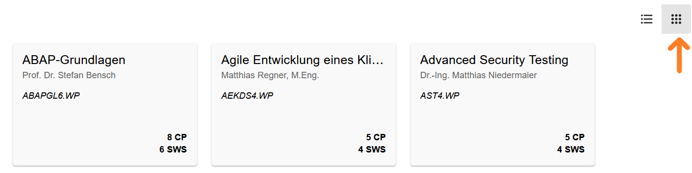

Dokumentation der Webseite für Studenten
Diese Dokumentation bietet eine umfassende Übersicht über die verschiedenen Funktionen, die speziell auf die Bedürfnisse von Studenten abgestimmt sind.
1 Navigationsleiste
Ganz oben auf der Webseite befindet sich die Navigationsleiste, die aus mehreren Buttons besteht. Diese Buttons bieten verschiedene Einstellungen und Hilfsmittel für die Benutzerfreundlichkeit und Funktionalität der Webseite.
1.1 Theme wählen
- Beschreibung und Anwendung: Mit diesem Button können Sie das Erscheinungsbild der Webseite anpassen. Klicken Sie auf den Button “Theme wählen” und wählen Sie die gewünschte Option aus dem Dropdown-Menü.
- Optionen:
- Darkmode: Wechselt die Webseite in ein dunkles Farbschema.
- Lightmode: Wechselt die Webseite in ein helles Farbschema.
- Automode: Übernimmt die bevorzugte Darstellung des Browsers des Studenten (hell oder dunkel).
1.2 Sprache wählen
- Beschreibung und Anwendung: Dieser Button ermöglicht es Ihnen, die Sprache der Webseite zu ändern.Klicken Sie auf den Button “Sprache wählen” und wählen Sie die gewünschte Sprache aus dem Dropdown-Menü. Die Webseite wird automatisch in die ausgewählte Sprache übersetzt.
- Optionen:
- Deutsch: Stellt die Webseite auf die deutsche Sprache um.
- Englisch: Stellt die Webseite auf die englische Sprache um.
1.3 Hilfe
- Beschreibung und Anwendung: Mit diesem Button können Sie ein Dropdown-Menü öffnen, dabei kann man sich entweder für ein Tutorial (kurze Anleitung zur Wahl der Wahlpflichtfächer)entscheiden oder man entscheidet sich für die Dokumentation (detaillierte Beschreibung der Webseite).
1.4 Login
- Beschreibung und Anwendung: Dieser Button ermöglicht es Ihnen, sich auf der Webseite mit Ihrem Benutzernamen und Passwort anzumelden. Klicken Sie auf den Button “Login”. Es öffnet sich eine Eingabemaske, in die Sie Ihren Benutzernamen und Ihr Passwort eingeben können. Nach erfolgreicher Eingabe werden Sie angemeldet und haben Zugriff auf Ihre persönlichen Daten und Funktionen.

1.5 Logout
- Beschreibung und Anwendung: Sobald die Anmeldung abgeschlossen ist wird der Benutzername des Studenten in der Navigationsleiste angezeigt und aus dem Login-Button ein Logout-Button, diesen kann der Student bei Bedarf nutzen, nachdem die Wahl der Wahlpflichtfächer erfolgt ist.
Diese Navigationsleiste ist ein zentraler Bestandteil der Webseite und bietet schnellen Zugriff auf wichtige Funktionen, die das Nutzererlebnis verbessern.
2 Funktionen für die Wahlpflichtfächer
2.1 Suchfunktion
Studenten können mithilfe einer Suchleiste, die eine Lupe enthält, nach Wahlpflichtfächern suchen, wenn sie den Namen des Wahlpflichtfachs kennen. Geben Sie einfach den Namen des gewünschten Wahlpflichtfachs in die Suchleiste ein und drücken Sie Enter oder klicken Sie auf die Lupe.

2.2 Filterfunktion
Die Filterfunktion ermöglicht es Studenten, spezifische Kriterien festzulegen, um die Auswahl der Wahlpflichtfächer einzugrenzen. Folgende Filter können gesetzt werden: Semesterwochenstunden (0-20), Credit Points (0-20), maximale Teilnehmeranzahl (0-100), Veranstaltungsart (wöchentlich, Blockveranstaltung, Irregulär) und der Wochentag. Hiermit bestimmen Studenten, wie viele Semesterwochenstunden die Wahlpflichtfächer insgesamt haben sollen, und wie viele Credit Points sie anstreben. Je nachdem, welche Kriterien der Student im Filter angegeben hat, werden ihm dann nur noch die Wahlpflichtfächer angezeigt, die diese Kriterien erfüllen. Um die Filter zu setzen, wählen die Studenten entsprechenden Werte in den Filteroptionen aus und bestätigen ihre Auswahl. Die Liste der Wahlpflichtfächer wird automatisch aktualisiert und zeigt nur noch die relevanten Ergebnisse an.
2.3 Anpassung der Darstellung
Zusätzlich gibt es zwei Buttons, mit denen der Student die Darstellung der Wahlpflichtfächer ändern kann. Wenn er auf den Button mit den drei horizontalen Strichen (Menu-Button) klickt, werden ihm die Wahlpflichtfächer zeilenweise untereinander angezeigt.

Klickt er jedoch auf den Button mit den 3x3 Punkten (Dots-Grid-Button), werden ihm mehrere Wahlpflichtfächer in einer Zeile angezeigt, wobei maximal drei Fächer in einer Zeile stehen.

All diese Funktionen erleichtern es Studenten, die passenden Wahlpflichtfächer zu finden und ihre Studienplanung effizient zu gestalten.
3 Wahlpflichtfächer: Informationen und Anmeldung
3.1 Detaillierte Informationen zu Wahlpflichtfächern
Wenn der Student auf ein Wahlpflichtfach klickt, öffnet sich ein Pop-up-Fenster, das folgende Informationen anzeigt:
- Dozenten
- Arbeitsaufwand: Semesterwochenstunden und Credit Points
- Maximale Anzahl der Teilnehmer
- Termine: Tag, Datum und Uhrzeit
- Hinweise: Informationen wie Exkursionen zu bestimmten Daten oder Online-Vorlesungen an bestimmten Tagen
Möchte der Student genauere Informationen zu dem jeweiligen Wahlpflichtfach erhalten, muss er innerhalb des Pop-up-Fensters ganz unten auf einen Button klicken, der die Kreisform hat. Dadurch wird ihm innerhalb desselben Pop-up-Fensters das Modulhandbuch angezeigt, jedoch nur ein Auszug des Modulhandbuchs, der nur Informationen zu dem jeweiligen Wahlpflichtfach enthält.

3.2 Wahlpflichtfach Anmeldung
Anmeldung der Wahlpflichtfächer
Die Anmeldung der Wahlpflichtfächer besteht im Grunde aus zwei Phasen: Die Wahl der Fächer, für die man sich anmelden möchte, und die Priorisierung der Wahlpflichtfächer.
Phase 1: Auswahl der Wahlpflichtfächer
- Auswahl der Fächer: Der Student kann die Wahlpflichtfächer auswählen, indem er auf die Checkbox klickt. Ob ein Fach ausgewählt wurde oder nicht, erkennt der Student daran, ob in der Checkbox ein Häkchen gesetzt ist (ausgewählt) oder nicht (nicht ausgewählt). Zusätzlich befindet sich eine Zahl oberhalb der Checkbox, diese steht für die Priorisierung, was genau das ist wird im weiteren Verlauf erläutert.
- Abwahl der Fächer: Falls der Student ein Wahlpflichtfach doch nicht mehr belegen möchte, kann er erneut auf die Checkbox klicken, um die Auswahl aufzuheben.
Phase 2: Priorisierung der Wahlpflichtfächer
- Voraussetzung: Die Priorisierung ist nur möglich, wenn in der ersten Phase mindestens ein Wahlpflichtfach ausgewählt wurde. Nur dann wird dem Studenten im rechten unteren Eck der Webseite ein Button angezeigt, der als Stift dargestellt wird.

- Öffnen des Priorisierungs-Fensters: Wenn der Student auf den Button klickt, wird ihm ein Pop-up-Fenster angezeigt. Dieses zeigt neben den angestrebten Credit Points auch die zuvor ausgewählten Wahlpflichtfächer. Unter den Namen der Wahlpflichtfächer steht zu Beginn die Ziffer 0, was bedeutet, dass bisher noch keine Priorisierung vorgenommen wurde.
- Setzen der Prioritäten: Um die Prioritäten zu setzen, muss jedem Fach eine positive Zahl zwischen 0 und 100 zugewiesen werden. Je größer die Zahl, desto höher ist die Priorität des jeweiligen Wahlpflichtfachs. Insgesamt müssen alle ausgewählten Fächer zusammen die Zahl 100 ergeben, ansonsten ist eine Anmeldung nicht möglich. Bei einem Versuch der Anmeldung ohne korrekte Priorisierung erscheint eine Fehlermeldung mit dem Hinweis “Insgesamt 100 Punkte vergeben!”.

Opitonal: Automatische Punkteverteilung (Autofill)
- Der Student hat die Möglichkeit, mithilfe des “Autofill”-Buttons die Verteilung der Punkte automatisch durchführen zu lassen. Je nachdem, welche Art von Fach es sich handelt, findet die automatische Verteilung unterschiedlich statt. Man kann dabei zwischen Prioritäts-Wahlpflichtfach und Fallback-Wahlpflichtfach unterscheiden, diese kann man nach Bedarf ändern, indem man auf den Button mit dem “B” oder “P” neben dem jeweiligen Wahlpflichtfach klickt.
Prioritäts-Wahlpflichtfach: Diese Fächer haben eine hohe Priorität und sollten bevorzugt belegt werden.
Fallback-Wahlpflichtfach: Diese Fächer dienen als Absicherung, falls man keines der Prioritäts-Wahlpflichtfächer erhält.
Erster Fall - Nur Prioritäts-Wahlpflichtfächer: Angenommen, man hat zwei Wahlpflichtfächer ausgewählt, und beide sind als Prioritäts-Wahlpflichtfächer markiert. Wenn der Student nun auf den “Autofill”-Button klickt, werden die 100 Punkte gleichmäßig auf die Anzahl der ausgewählten Wahlpflichtfächer verteilt. In diesem Fall erhalten beide Wahlpflichtfächer jeweils 50 Punkte.
Zweiter Fall - Prioritäts- und Fallback-Wahlpflichtfächer gemischt: Falls zusätzlich Fallback-Wahlpflichtfächer genutzt werden und anschließend der “Autofill”-Button genutzt wird, erfolgt die Verteilung wie folgt: Angenommen, man hat erneut zwei Fächer ausgewählt, wobei eines dieser Fächer ein Fallback-Wahlpflichtfach und das andere ein Prioritäts-Wahlpflichtfach ist. In diesem Szenario erhält das Fallback-Wahlpflichtfach 1 Punkt, und das Prioritäts-Wahlpflichtfach erhält 99 Punkte. Fallback-Fächer bekommen immer einen Punkt, sobald man “Autofill” verwendet, denn diese Fächer sollen nur dazu dienen, dass man als Student zumindest das Fallback-Wahlpflichtfach bekommt, falls man keines der Prioritäts-Wahlpflichtfächer erhält. Das Fallback-Fach ist also nur für den Worst-Case gedacht. Es macht daher Sinn, dem Fallback-Fach die geringste Punktzahl zu geben, nämlich 1 Punkt.
Abschließen der Anmeldung: Wenn der Student die Prioritäten so verteilt hat, dass sie insgesamt 100 Punkte ergeben, kann die Anmeldung über den Button “Anmeldung” innerhalb des Pop-up-Fensters abgeschlossen werden.
Änderungen und Abwahlen
- Änderungen: Wenn der Student nachträglich Änderungen vornehmen möchte, wie z.B. ein Wahlpflichtfach abwählen, muss er auf die Checkbox des jeweiligen Fachs klicken. Es öffnet sich ein Pop-up-Fenster, das ihn darüber informiert, dass durch diese Aktion die vergebenen Punkte verloren gehen.

- Bestätigen der Abwahl: Wenn der Student seine Aktion bestätigt, werden die Punkte des abgewählten Wahlpflichtfachs gleichmäßig auf die restlichen ausgewählten Wahlpflichtfächer aufgeteilt.